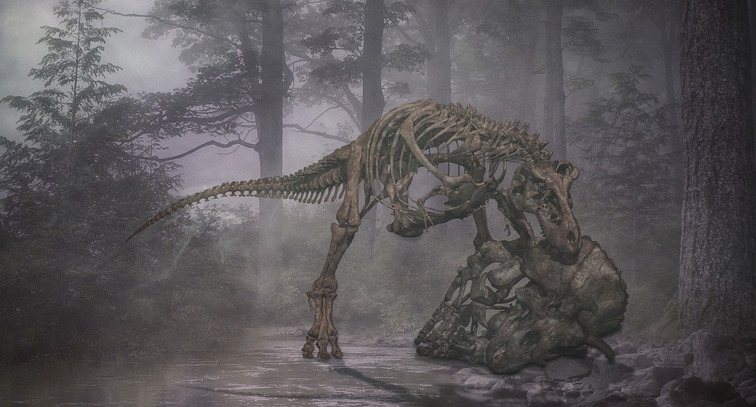
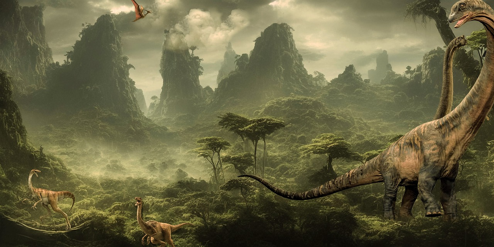
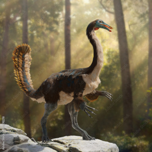

A era dos dinossauros
Os dinossauros são um grupo de répteis que dominaram a Terra durante a era Mesozoica, que se divide em três períodos: Triássico, Jurássico e Cretáceo, durando cerca de 180 milhões de anos. Surgiram há aproximadamente 230 milhões de anos, durante o período Triássico, e se diversificaram em uma vasta gama de formas e tamanhos.
No Triássico, os primeiros dinossauros eram pequenos e bípedes. Durante o Jurássico, eles se diversificaram e cresceram, com espécies famosas como o Brachiosaurus e o Stegosaurus.
Os dinossauros do período Cretáceo foram os maiores predadores da Era Mesozoica. Entre as espécies que viveram nesse período estão: Tyrannosaurus rex, Velociraptor mongoliensis, Carcharodontosaurus, Spinosaurus, Triceratops horridus, Torossauro, Parasaurolophus walkeri, Gryposaurus, Saurópodes, Titanosauros.
Embora a palavra dinossauro signifique "lagarto terrível", esses animais não eram lagartos ou mesmo répteis no sentido tradicional, mas, sim, ornitodiros, diferenciando-se dos répteis principalmente por suas patas eretas, pela postura, comportamento normalmente ativo e metabolismo aviários, incluindo a manutenção de uma temperatura constante.
Tipos de dinossauros
Carnivoros
Os dinossauros carnívoros, ou terópodes, foram os principais predadores durante a era dos dinossauros. Eles eram geralmente bípedes, o que lhes permitia correr rapidamente atrás de suas presas. A maioria tinha garras afiadas e dentes serrilhados, ideais para cortar carne.
Herbívoros
Se alimentavam de plantas, como folhas, galhos e frutas. Eram frequentemente quadrúpedes e tinham dentes adaptados para triturar vegetação. Exemplos: Triceratops, Brachiosaurus.
Onívoros
Tinham uma dieta variada, comendo tanto carne quanto plantas. Embora mais raros, alguns dinossauros de menor porte podiam ser onívoros, adaptando sua alimentação conforme a disponibilidade de recursos. Exemplos: certos terópodes menores, como o Oviraptor.
A extinção dos dinossauros
A hipótese mais aceita é de que o meteorito encontrado na cratera de Chicxulub, na Península de Iucatã, foi o responsável pela extinção dos dinossauros, ao colidir com a Terra e originar uma grande explosão, a qual carbonizou bilhões de animais instantaneamente, levantando também uma nuvem de poeira tão espessa que bloqueou a luz do sol e transformou o planeta em um local extremamente frio, em um evento meteorológico similar ao inverno nuclear, eliminando quase todas as espécies existentes de dinossauros.
Pouquíssimos deles sobreviveram, e eram todos aviários, pequenos e provavelmente terrestres, já que as florestas foram amplamente destruídas por incêndios após o impacto do meteoro, e somente aves que não dependiam de árvores para obter alimento e esconderijo poderiam ter sobrevivido.